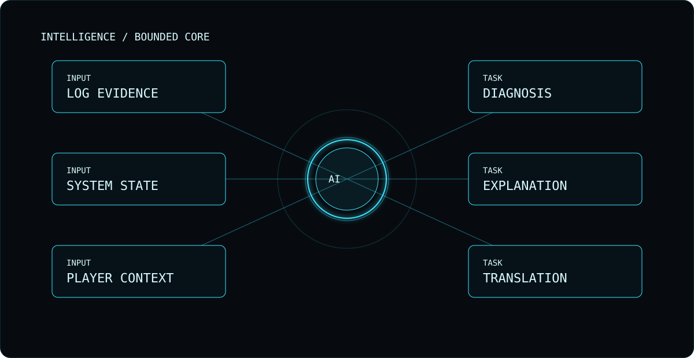

Hello! I'm the live VoidOne assistant. Ask a question below. I'll be clear when I don't know something.
ASSIST WHEN
YOU CHOOSE.
VoidOne treats AI as an optional bounded tool for diagnosis, explanation and other player workflows.

INTELLIGENCE / EVIDENCE · DIAGNOSIS · EXPLANATIONVOIDONE / OPEN SURFACE
INTELLIGENCE / LIVE CHATASK. TEST.
ASK. TEST.
UNDERSTAND.
A live assistant powered by Cloudflare Workers AI. Ask about VoidOne, releases, setup, or general PC-game troubleshooting. It cannot inspect your computer or verify facts it has not been given.
READY · SEND A MESSAGE TO BEGIN
Limit: 2,000 characters per message. Avoid sharing passwords, private keys, or personal information.